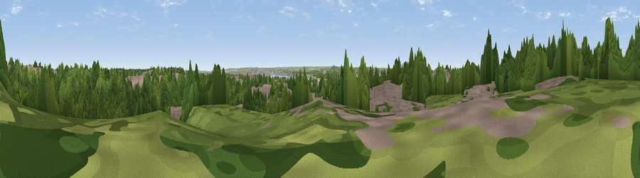

Viewpoint near Grays
#43854 in England · top 79% of its area beats it · near GraysThe view, rendered

A 360° render of this exact spot computed from the terrain model, tree cover and land cover — summer colours, afternoon light, calibrated against photographs of famous viewpoints. Real trees, hedges and buildings will differ in detail.
The panorama
Grey silhouette: terrain skyline in each direction (720 bearings, Earth curvature and refraction included). Dashed green: skyline with trees (+15 m) and buildings (+8 m) as obstacles. Blue strip: how far the ground is visible on each bearing.
Where the view opens
Wedge length = distance to the farthest visible ground on that bearing (vegetation-aware). Rings at 10, 25 and 50 km.
What fills the view
65% woodland · 22% built-up · 8% grassland · 3% water · 1% cropland
Angular shares of the visible panorama (visual magnitude), not map area. Landscape diversity 0.43 (0–1 Shannon).
Key numbers
More beautiful places nearby
The staircase of upgrades: each row has a higher view potential than everything closer. Driving times are estimates from straight-line distance, calibrated against real road routing — check an actual route before setting out.
| Place | Direction | Drive | Score |
|---|---|---|---|
| Viewpoint near Grays | WNW · 1 km | ~2 min | 36.1 |
| Viewpoint near Aveley | WNW · 3 km | ~7 min | 41.1 |
| Viewpoint near Swanscombe | S · 4 km | ~10 min | 42.2 |
| Viewpoint near North Ockendon | N · 5 km | ~11 min | 48.9 |
| Sandy Lane Pit | WNW · 5 km | ~12 min | 51.1 |
| Viewpoint near Ebbsfleet Valley | S · 6 km | ~13 min | 56.1 |
| Viewpoint near Horndon On The Hill | NE · 10 km | ~19 min | 58.8 |
| Viewpoint near Birling | SSE · 17 km | ~30 min | 65.2 |
51.48419, 0.31338 · source: screening · position refined by local search. Computed location — check access rights before visiting.